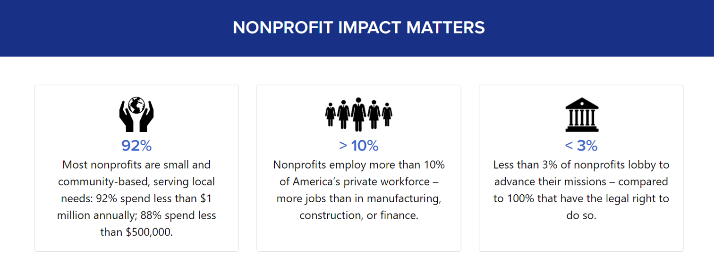
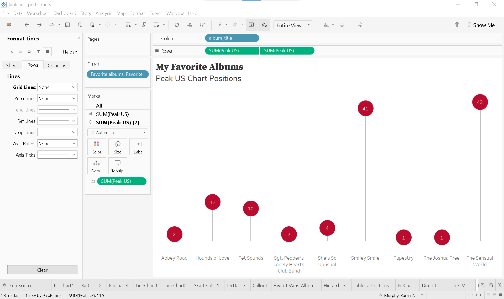
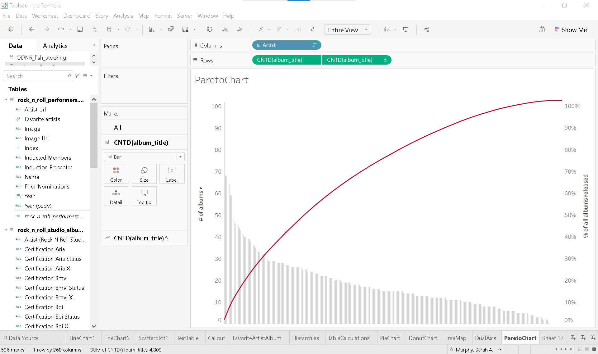
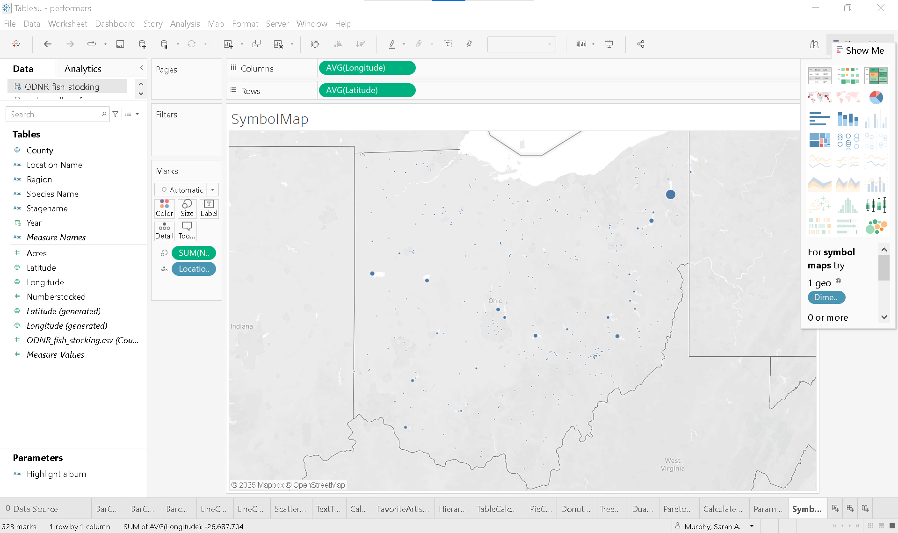
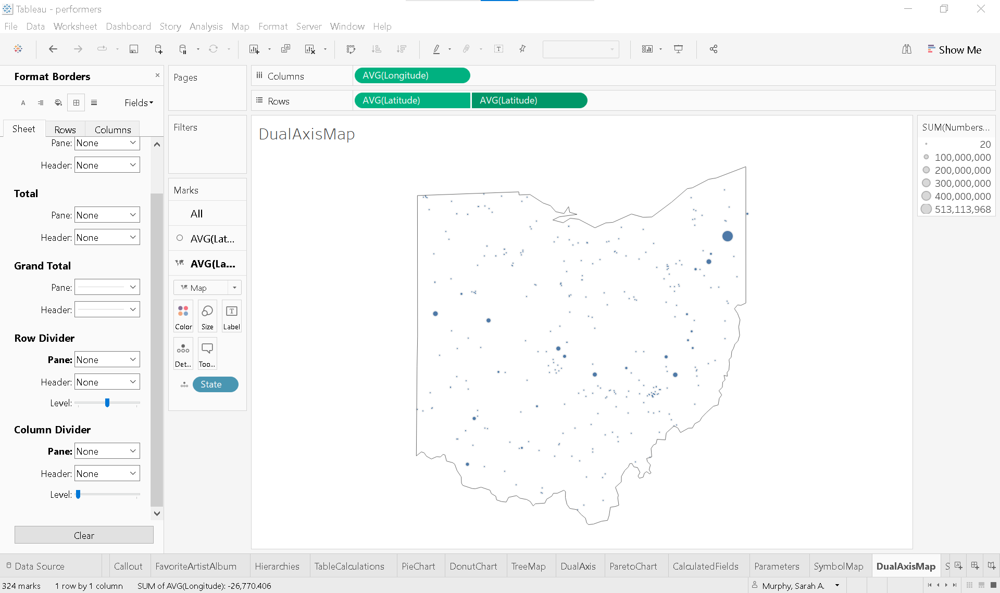

if [Certification Riaa Status]='Gold' then 500000
elseif [Certification Riaa Status]='Platinum' then 1000000
elseif [Certification Riaa Status]='Multiplatinum' then 2000000
elseif [Certification Riaa Status]='Diamond' then 10000000
endLesson 4. Communicate Data
Lesson 3 introduced the use of groups to modify data categories and hierarchies to organize data and enhance interactivity in visualizations. The readings explored the advantages and limitations of pie charts for illustrating part-to-whole relationships and suggested alternative visualization methods. Formatting techniques and table calculations were also covered to improve visual impact and optimize Tableau performance by limiting the scope of computation to what’s displayed in the view. Lesson 4 introduces calculated fields, parameters, maps, and dashboard design.
Data skills | concepts
- Tableau
- Analyzing data
- Arguing with Data
Learning objectives
- Create calculated fields to clean data, assign values, add interactivity, and perform statistical analysis.
- Use parameters to replace constants, highlight data dynamically, apply filters, and more.
- Build symbol maps and choropleth maps for geographic data visualization.
- Design and assemble a dashboard.
This tutorial is designed to support a multi-session Tableau for Research workshop hosted by The Ohio State University Libraries Research Commons. It is intended to help the ABSOLUTE beginner, or anyone who is relatively new to Tableau to build the skills and confidence to apply Tableau to research projects.
LESSON 4
Arguing with data
Understanding your audience is not only essential for effective data visualization—it’s also a cornerstone of data literacy. While academic research papers typically follow a structured format (introduction, literature review, methodology, discussion, and conclusion) and adhere to style guides like the Chicago Manual of Style for visuals, this approach may not suit every audience. When advocating with data, a more impactful strategy might involve using simple icons, bold numbers, and brief explanatory text to quickly engage and motivate action.

https://www.nonprofitimpactmatters.org/
Ethical use of data
Handling data responsibly—especially when it includes personally identifiable information—requires thoughtful ethical practices. From how data is collected and stored to how it’s shared and used, each step involves important considerations. To explore these principles further, check out this informative video from Virginia Tech University Libraries.
Data Citation
Using data ethically means giving proper credit to the people or organizations that created it. Just like citing books or articles, citing data acknowledges the original source and supports transparency and reproducibility. Want to learn more? Check out ICPSR’s fun video on why citing data matters!
Managing data
Having a plan to organize, store, preserve, and share research data is an important aspect of the research lifecycle. Check out University Libraries resources supporting Research Data Management.
Choose an effective visual
Dual-axis combination chart
A dual-axis combination chart lets you display two different data fields on the same graph—either to save space or to highlight comparisons more effectively. You can also enhance your visual analysis by layering multiple mark types (like bars and lines) in a single view.
Let’s dive back into our rock_n_roll_performers dataset to create a dual-axis chart that highlights our favorite albums and their peak U.S. chart positions.
- Start a new worksheet and rename it DualAxis
- Filter for favorite albums
- Drag Favorite albums group to the Filters shelf.
- Select Favorite albums only.
- Build the initial bar chart
- Drag album_title to Columns.
- Drag Peak US to Rows.
- Create the dual axis
- Hold Ctrl (or Option on Mac) and drag SUM(Peak US) to the right on the Rows shelf to duplicate it.
- You’ll now see three Marks Cards:
- All
- SUM(Peak US)
- SUM(Peak US) (2)
- Click the ▼ caret on the second SUM(Peak US) pill and select Dual Axis.
- Format as a lollipop chart
- On the Marks Card for SUM(Peak US), change the mark type to Bar.
- On the Marks Card for SUM(Peak US) (2), leave it as Circle.
- Synchronize the axes:
- Right-click the right Y-axis and select Synchronize Axis.
- Adjust bar size:
- On the SUM(Peak US) Marks card, clickSize and drag the slider left to reduce bar width.
- Enhance the visual formatting
- Change the view to Entire View from the Toolbar.
- Color the marks:
- Bars:
On SUM(Peak US) click Color and choose a light gray. - Circles:
On SUM(Peak US) (2) click Color > More Colors…, enter #ba0c2f for HTML color.
- Bars:
- Add data labels:
- On the SUM(Peak US) (2), hold Ctrl (or Option on Mac) and drag SUM(Peak US) to Label.
- Click Label and set:
- Horizontal Alignment: Center
- Vertical Alignment: Center
- Font Color: White
- Adjust circle and bar size if needed.
- Clean up the view
- Remove unnecessary lines:
- Go to Format > Lines.
- Set Zero Lines and Grid Lines to None.
- Go to Format > Lines.
- Remove borders:
- Go to Format > Borders.
- On Sheet tab, set Row and Column Dividers to None.
- Go to Format > Borders.
- Hide headers and field labels:
- Right-click the left Y-axis and uncheck Show Header.
- Right-click album_title and select Hide Field Labels for Columns.
- Ensure album titles are fully visible:
- Hover over the X-axis line until the until the ↕ icon appears.
- Drag upward to increase axis height.
- Remove unnecessary lines:
- Add a descriptive title
- Double click the worksheet title DualAxis.
- Enter:
- Line 1: My Favorite Albums
- Line 2: Peak US Chart Positions.
- Adjust font sizes and styling as needed.

📈 Pareto chart
Pareto charts illustrate the Pareto Principle, which suggests that roughly 80% of outcomes result from 20% of causes. In Tableau, these charts are built using table calculations. Individual values are displayed as bars in descending order, while a cumulative percentage line overlays the bars to show the proportion each category contributes to the total.
Create a Pareto Chart showing the cumulative percentage of album titles of all inductees into the Rock N Roll Hall of Fame
- Start a new worksheet and rename it ParetoChart
-
Adjust the View
- In the Toolbar, change the view from Standard to Entire View
-
Build the initial bar chart
- Drag Artist to Columns.
- Right-click , hold, and drag album_title to Rows.
- In the Drop Field dialog, select CNTD(album_title).
- Sort the bars in descending order.
-
Create the Dual Axis
- Hold Ctrl (or Option on Mac) and drag CNTD(album_title) to the right on the Rows shelf to duplicate it.
- Click the ▼ caret on the second CNTD(album_title) pill and select Dual Axis.
-
Format as a Pareto chart.
-
On the Marks Card for CNTD(album_title):
- Set mark type to Bar.
- Click Color and choose a light gray.
- Click Size and drag the slider all the way to left to minimize bar size.
-
On the Marks Card for CNTD(album_title) (2):
- Set the mark type to Line.
- Click Color > More Colors… and enter #ba0c2f in the HTML color field.
-
On the Marks Card for CNTD(album_title):
-
Add a table calculation
- Click the ▼ caret on the second CNTD(album_title) pill and select Add Table Calculation.
- Change Calculation Type to Running Total.
- Check ✔ Add secondary calculation and set it to Percent of Total.
- Close the Table Calculation window.
-
Adjust axis titles.
- Right-click the left Y-axis, choose Edit Axis and rename it to # of albums.
- Right-clic the right Y-axis, choose Edit Axis and rename it to % of all albums released.
-
Clean up the view
-
Remove lines:
- Go to Format > Lines.
- Set Zero Lines and Grid Lines to None.
-
Remove borders:
- Go to Format > Borders.
- On Sheet tab, set Row and Column Dividers to None.
-
Hide headers and field labels:
- Click the ▼ caret on the Artist pill and uncheck Show Header.
- Right-click Artist and select Hide Field Labels for Columns.
-
Remove lines:
-
Enhance interactivity.
-
On the Marks Card for All:
- Click Tooltip
- Edit the tooltip to: Artist released CNTD(album_title) albums
- Hover over a bar to preview and proofread the tooltip.
-
On the Marks Card for All:

Calculated fields and parameters
🧮 Calculated fields
Calculated fields empower you to transform your data directly within Tableau. You can use them to clean and organize data, define custom segments, add interactivity, and even perform statistical or mathematical calculations—all without modifying the original dataset.
For example, in the rock_n_roll_studio_albums table, you’ll find album certification statuses from organizations like the RIAA, BPI, and ARIA. With calculated fields, you can standardize these certifications, compare award levels across countries, or even create new fields that group albums by global recognition—making your analysis more insightful and dynamic.
Let’s take a closer look at how calculated fields work by analyzing RIAA certifications for our favorite albums.
Over time, the Recording Industry Association of America (RIAA) has updated its certification standards to reflect changes in how music is consumed. Originally based solely on album sales, certifications now account for digital downloads and streaming activity. To keep things simple, we’ll use the current criteria for album-level awards, as defined by the RIAA in February 2016:
🎵 RIAA Certification Levels - Gold: 500,000 units - Platinum: 1,000,000 units - Multi-Platinum: 2,000,000+ units (in 1,000,000-unit increments) - Diamond: 10,000,000 units
💽 What Counts as a Unit? A single unit can be any of the following:
- One full digital or physical album sale
- 10 track downloads from the same album
- 1,500 on-demand audio or video streams from the album
Using this framework, we can create a calculated field in Tableau to categorize albums by their certification level based on total units.
- Start a new worksheet and rename it CalculatedFields
- Build a text table
- Drag Favorite albums to the Filters Shelf and select Favorite albums.
- Drag album_title to Rows.
- Drag Certification Riaa Status to Text on the Marks Card.
- Right-click any album titles with no certification and select ❌ Exclude.
- Create a calculated field
- In the Data Pane, click the ▼ caret next to the search bar and choose Create Calculated Field.
- Name the field Number of units.
- Click the ▶ caret on the right side of the Calculation Editor to explore available functions.
- Use an IF statement to assign unit values based on certification: assign units to each certification category.
- Add the calculated field to view
- On the Marks Card, replace Certification Riaa Status with the calculated field Number of units.
- Clean up and enhance the view
- Remove borders and shading:
- Go to Format > Borders.
- On Sheet tab, set Row Divider to None.
- On Formatting Pane, go to Shading.
- On Sheet tab, set row banding to None on Pane and Header.
- Go to Format > Borders.
- Hide field labels:
- Right-click album_title and select Hide Field Labels for Rows.
- Edit the text display:
- On the Marks Card, click Text and click the … button next to the text box..
- Enter the word units after <SUM(Number of units)> for clarity.
- Remove borders and shading:
Video of steps 1-5 above
Parameters
In Tableau, parameters: - Replace constant values such as numbers, dates, or text strings in calculations, filters, or reference lines—making your dashboards more flexible and dynamic. - Enhance interactivity by allowing users to control what data is displayed or how it’s calculated, depending on how the parameter is integrated into the view.
Let’s take our CalculatedFields text table and transform it into a bar chart—a perfect opportunity to explore how parameters can add interactivity and flexibility to your visualization.
- Duplicate the existing sheet
- Right-click on CalculatedFields and select Duplicate.
- Rename the new sheet Parameters.
- Transform text table into a bar chart
- Move SUM(Number of units) from Text to Columns.
- Sort the bars in descending order.
- Create a parameter to highlight specific albums
- In the Data Pane, click the ▼ caret next to the search bar and choose Create Parameter.
- Name the parameter Highlight album.
- Set the Data type to String.
- Under Allowable values, select List.
- From the Add values from ▼ dropdown, choose rock_n_roll_performers > Certification Riaa Status.
Once created, the Highlight album parameter will appear at the bottom of the Data Pane. Right-click it and select Show Parameter to display it in the view.
Note:
Selecting values like Diamond, Gold, or Platinum won’t affect the chart yet. That’s because parameters must be embedded in a calculated field to have an effect—and that calculated field must be added to the view..
- Create a calculated field
- In the Data Pane, click the ▼ caret next to the search bar and choose Create Calculated Field.
- Name the field Album highlighter.
- Enter the following formula:
[Certification Riaa Status]=[Highlight album]
# This expression returns True for albums that match the selected certification in the parameter. - Add the calculated field to view
- On the Marks Card, drag Album highligther to Color.
- Use the Highlight album parameter to toggle between Diamond, Gold, or Platinum and watch the corresponding bars update.
- Clean up and enhance the view
- Remove lines:
- Go to Format > Lines.
- On Columns tab, set Gridlines and Axis Rulers to None.
- Go to Format > Lines.
- Customize colors:
- For True
- Click Color > Edit Colors and then click True.
- Choose a bold color, like red.
- For False
- Click Color >Edit Colors and then click False.
- Choose a neutral color, like light gray.
- For True
- Remove lines:
Tip: Rename Output File
There are countless creative ways to use parameters with calculated fields in Tableau. You can:
- Highlight or filter specific data
- Add weights or thresholds
- Dynamically control reference lines
- Switch between metrics or dimensions
- And much more!
Basic Mapping
The ODNR_fish_stocking.csv dataset includes latitude and longitude for each stocking location. Here’s how to turn this data into a meaningful map:
🗺️ Symbol map
- Start a new worksheet and rename it SymbolMap
- Set the active data source
- On the Data Pane, select
ODNR_fish_stocking.
- On the Data Pane, select
- Highlight Latitude, and Longitude in the Data Pane
- Open Show Me—you’ll notice that Symbol Map is highlighted, since you’ve selected at least one geographic field
- Click Symbol Map to generate a map
At this point, the map isn’t very informative. To make it meaningful, we need to add both a measure and a dimension.
- Drag Numberstocked to Size on the Marks Card
- Drag Location Name to Detail
Now, each lake, river, reservoir, or pond where fish were stocked appears as a separate symbol. The size of each symbol reflects the number of fish stocked at that location.

Another quick way to create a symbol map:
- Start a new worksheet
- Double-click on County (or any geographic dimension) Tableau will automatically generate a map of Ohio, placing a blue dot in the center of each county.
🗺️ Choropleth map
You can easily convert your symbol map into a choropleth map by replacing Location Name with County on Detail and changing the mark type from Automatic to Map. This change fills each county with color instead of using dots.
By dragging Number Stocked (or another measure) to Color, you can visualize how that value is distributed across the state. The deeper the shade, the higher the number—making it easy to spot patterns and regional differences at a glance.
🗺️ Dual-axis map
To see Ohio alone, build a dual-axis map that combines features from both the symbol and the choropleth map. 1. Duplicate the SymbolMap worksheet and rename it DualAxisMap 2. Create the dual axis - Hold Ctrl (or Option on Mac) and drag AVG(Latitude) to the right on the Rows shelf to duplicate it. 3. Create a calculated field - In the Data Pane, click the ▼ caret next to the search bar and choose Create Calculated Field. - Name the field State. - Enter the following formula:
"OH"
This expression creates a field for **State** and assigns the string "OH" to every row in the dataset.- Change State to String data type (if not already) and set Geographic Role to State/Province.
- Format to isolate state
- On the Marks Card for AVG(Latitude) (2):
- Remove SUM(Numberstocked) and Location Name from the marks card.
- Change the marks type to Map.
- Place State on detail.
- Click Color:
- Color: white
- Opacity: 0%
- Border: dark gray
- From the Toolbar select Map > Background Layers.
- Set Washout to 100%
- On the Marks Card for AVG(Latitude) (2):
- Set dual-axis
- Click the ▼ caret on the second AVG(Latitude) pill and select Dual Axis.
- Clean up and enhance the view
- Remove borders:
- Go to Format > Borders.
- On Sheet tab, set Row and Column Dividers to None.
- Go to Format > Borders.
- Remove borders:

Dashboards
Creating effective dashboards is both an art and a science—a skill that develops with time, experience, and thoughtful practice. Great dashboards are tailored to a specific audience, provide clear context and guidance, encourage interaction, and follow visual best practices.
Before diving into design, pause and consider your audience. A highly detailed, data-dense dashboard might be perfect for one group but overwhelming for another. Some users may need narrative context embedded in each view. Ask yourself:
- What is the primary goal of this dashboard?
- How will it be used?
- What questions should it help answer?
- How will it support decision-making?
These questions guide the design process and ensure your dashboard communicates data effectively.
Note: Each individual visualization is called a view in Tableau, and a dashboard is a collection of these views.
Let’s build a dashboard that compares the highest Peak US chart position of albums released by each 2025 Rock and Roll Hall of Fame inductee with all albums released by your favorite artist. This dashboard will include three key views:
- Barchart1
- FavoriteArtistAlbum
- Scatterplot1
Create a new dashboard
- Click the New Dashboard
 icon or go to the Dashboard menu in the toolbar and select New Dashboard.
icon or go to the Dashboard menu in the toolbar and select New Dashboard.
- Click the New Dashboard
Set the display size
- Before adding any content, determine the final display size:
- If embedding in a website or blog, use a fixed size.
- Automatic sizing adjusts to screen dimensions, but may distort views.
- For academic presentations:
- Under Size (left panel), select PowerPoint (1600 x 900).
- Before adding any content, determine the final display size:
Prepare the worksheets
- Barchart1
- On Rows and the Marks Card, change the aggregation of Peak US from Average to Minimum.
- Double click the worksheet title and remove the word average.
- FavoriteArtistAlbum
- Drag Artist to the Filters shelf and select your favorite artist.
- Remove Artists from Rows
- If your artist is from outise the US, consider adding their native chart position (e.g., Peak UK, Peak AUS).
- Add a descriptive title
- Double click the worksheet title and enter something like:
Kate Bush
Peak US and UK Chart Positions
- Adjust font size and styling as needed
- Double click the worksheet title and enter something like:
- Adjust formatting
- Go to the Format toolbar, select Borders.
- In the Formatting Pane:
- On the Sheet tab, set Row Divider to None for both Pane and Header.
- Click Shading:
- Set Row Banding to None for both Pane and Header.
- Click Alignment:
- From the Fields ▼ dropdown, select Measure Values .
- Set Horizontal Alignment to Center.
- Scatterplot1
- Filter for your favorite artist
- Right-click Artist on the Filters shelf, click None to clear all filters, then select your favorite artist.
- Remove lines
- In the Formatting Pane, click Lines .
- On the Sheet tab, set Grid Lines, Zero Lines and Axis Rulers to None.
- Filter for your favorite artist
- Barchart1
Assemble the dashboard
- Drag Barchart1 onto the dashboard.
- Click the ▼ caret on the upper corner and select Fit > Entire View.
- Drag FavoriteArtistAlbum to the right of Barchart1.
- Click the sheet. When the gray border appears, click the ▼ caret and select Fit > Entire View.
- Drag Scatterplot1 below FavoriteArtistAlbum.
- Click the sheet. When the gray border appears, click the ▼ caret and select Fit > Entire View.
- Uncheck Title
- Drag Barchart1 onto the dashboard.
Final touches Tableau may automatically place the color legend for Scatterplot1 beside the other views. Feel free to reposition or redesign this layout to better suit your audience and storytelling goals.
The color legend in your dashboard plays a key role in helping users interpret the data in Scatterplot1. Here are a few ways to enhance its presentation:
Option 1: Reposition the Color Legend
- Click the color legend to activate it (a blue border will appear).
-
Drag it to a new location on the dashboard—consider placing it:
- Below or beside Scatterplot1 for proximity.
- In a corner or floating position to save space.
- In a dedicated sidebar for a cleaner layout.
- Click the ▼ caret in the upper corner.
- Choose Distribute Contents Evenly to improve spacing and readability, especially if the legend includes many categories.
Option 2: Use a Custom Legend or Tooltip
-
Remove the default color legend and instead:
- Add a custom text box with a simplified or stylized legend.
- Use tooltips in the scatterplot to display color meaning when users hover over data points.
- Create a separate worksheet that acts as a visual legend and place it on the dashboard.
Can you think of an alternative way to present the color legend?

BETTER DATA VISUALIZATIONS

- by Jonathan Schwabish
- New York : Columbia University Press, 2021.
-
Recommended Chapters:
Chapter 7: “Putting it All Together.”
Chapter 12: “Developing a Data Visualization Style Guide”
EFFECTIVE DATA VISUALIZATION
- by Stephanie Evergreen
- Thousand Oaks, California: SAGE Publications, 2020
-
Recommended Chapters:
Chapter 11: “It’s About More Than the Buttons”
STORYTELLING WITH DATA

- by Cole Nussbaumer Knaflic
- Hoboken, New Jersey: Wiley, 2015.
-
Recommended Chapters:
Chapter 8: “Putting it All Together.”